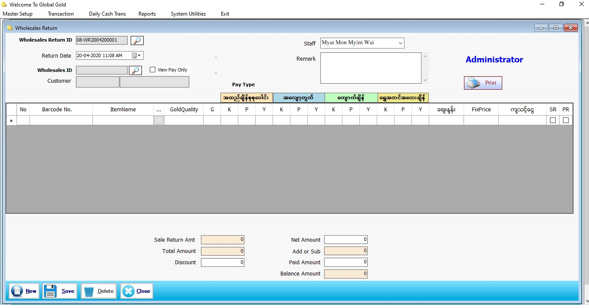

Wholesale Return

- Transaction အောက်ရှိ WholeSales Return ကို ဖွင့်ပါ။
- WholeSales ချထားသော အထည်များအား ပြန်ပေးခြင်း ပြုလုပ်နိုင်သော Form ဖြစ်ပါသည်။
- WholeSales Return ID တွင် Series အလိုက် Software မှ Auto တပ်ပေးပါမည်၊၊
- Return Date တွင် မိမိ Return ပြန်မည့် Date ကို ထည့်ပေးရမည်။
- WholeSales ကို Return ပြန်ရန်အတွက် WholeSales ID တွင် မှန်ဘီလူးကိုနှိပ်၍ WholeSales Invoice ကိုရွေးပေးရမည်။
- ဘားကုတ် နံပတ်ကို Scan ဖတ်၍သော်လည်းကောင်း ခဲရောင်လေးထောင့်တုံးကို နှိပ်၍သော်လည်းကောင်း WholeSales Return ပြန်ပေးမည့် Items များကိုရွေးချယ်နိုင်ပါသည်။
- Wholesale တွင် Cash(Sale) အနေဖြင့်ပေးခဲ့သော အထည်များကို Sale Return အဖြစ် သတ်မှတ်နိုင်မည် ဖြစ်သည်။
- Wholesale တွင် Consignment(Pay) အနေဖြင့်ပေးခဲ့သော အထည်များကို Pay Return အဖြစ် သတ်မှတ်နိုင်မည် ဖြစ်သည်။
- Data များထည့်သ္ငင်းပြီးပါ Save Button ကို နှိပ်၍ သိမ်းဆည်းနိုင်ပါသည်။
- အသစ်ပြုလုပ်မည်ဆိုပါက New Button ကိုနှိပ်၍ အသစ်ပြုလုပ်နိုင်ပါသည်။
- ပြန်လည်ကြည့်ရှုလိုပါက WholeSales Return ID ဘေးရှိ မှန်ဘီလူးကိုနှိပ်၍ ကြည့်နိုင်ပါသည်။
- WholeSales Return Form အသုံးပြုပြီးပါက Close Button ကို နှိပ်၍ ပိတ်နိုင်ပါသည်။